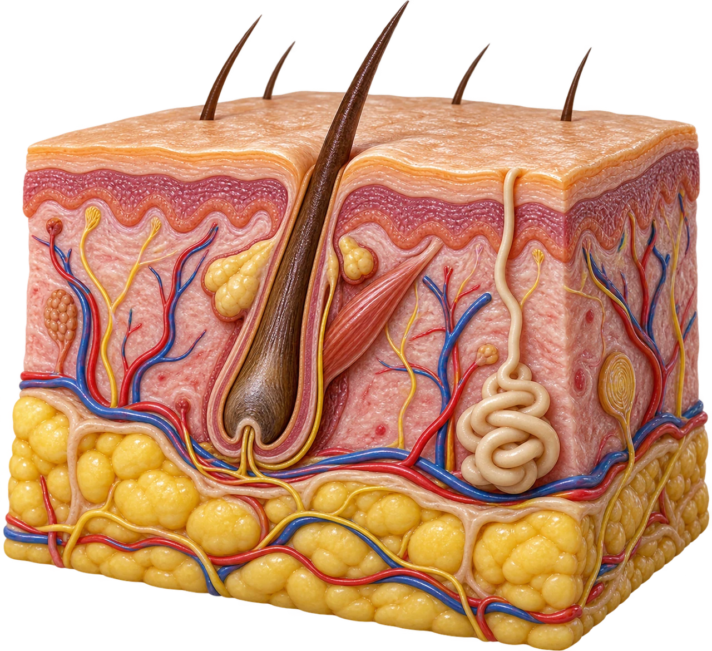

MEDLEX / CROWN GOLD
Integumentary system
 MedLexTHE LANGUAGE OF MEDICINE
MedLexTHE LANGUAGE OF MEDICINE Healthcare Crown Academy
Healthcare Crown AcademyMEDLEX / BATCH 02
Integumentary
system
Explore the vocabulary. Make the distinctions. Explain the meaning with confidence.

01 / EXPLORE & APPLY
What does this note mean?
Explore the detail panels, retrieve the meaning, then explain the distinction.
A short sentence can carry a detailed clinical picture.
02 / EXPLORE & APPLY
Your route through the lesson
Explore the detail panels, retrieve the meaning, then explain the distinction.
01 · Locate
Identify skin layers and accessory structures.
02 · Decode
Interpret common prefixes, roots, combining forms, and suffixes.
03 · Describe
Distinguish primary lesions and secondary changes.
04 · Apply
Translate clinical language and explain common procedure terms.
Success check: decode a new term and write a clear, measured lesion description.
03 / EXPLORE & APPLY
A system at the body’s surface
Explore the detail panels, retrieve the meaning, then explain the distinction.
Skin
Epidermis and dermis form the skin proper.
Hair & nails
Accessory structures made largely of keratin.
Glands
Sweat glands produce sweat; sebaceous glands produce sebum.
Barrier protection · sensation · temperature regulation · initiation of vitamin D synthesis
04 / EXPLORE & APPLY
Explore the layers
Explore the detail panels, retrieve the meaning, then explain the distinction.
Original schematic · not to scale · drag the tilt slider
Click each layer to connect structure with meaning.
Epidermis · epi- = upon
Outer, avascular epithelium. Keratinocytes form its main cell population; melanocytes produce pigment.
Dermis · derm = skin
Connective tissue containing vessels, nerves, follicles and glands. Papillary and reticular regions support the epidermis.
Hypodermis · hypo- = below
Subcutaneous connective and adipose tissue beneath the skin. It cushions, insulates and anchors.
Source desk
[1] OpenStax ↗05 / EXPLORE & APPLY
The accessories have their own roots
Explore the detail panels, retrieve the meaning, then explain the distinction.
Keep hidr/o (sweat) separate from hydr/o (water).
06 / EXPLORE & APPLY
Every term is a small puzzle
Explore the detail panels, retrieve the meaning, then explain the distinction.
hyperhidrosis → excessive sweating
Root
The core meaning: dermat = skin.
Combining form
Root + combining vowel: dermat/o.
Suffix first
Read the ending, then the root and prefix.
Slashes mark teaching boundaries; they are not used in normal clinical spelling.
07 / EXPLORE & APPLY
Build words without adding extra vowels
Explore the detail panels, retrieve the meaning, then explain the distinction.
dermat + -itis
dermatitisUsually drop the combining vowel before a suffix beginning with a vowel.
dermat/o + -logy
dermatologyUsually retain it before a suffix beginning with a consonant.
Word-building rules are guides. Confirm spelling and clinical meaning in a trusted reference.
08 / EXPLORE & APPLY
The core skin vocabulary
Explore the detail panels, retrieve the meaning, then explain the distinction.
09 / EXPLORE & APPLY
Prefixes change the location or amount
Explore the detail panels, retrieve the meaning, then explain the distinction.
epi- · upon
epidermal — pertaining to the epidermis
sub- · under
subcutaneous — beneath the skin
intra- · within
intradermal — within the dermis
hyper- · excessive
hyperkeratosis — thickened outer keratin layer
hypo- · reduced
hypopigmentation — reduced pigmentation
a- / an- · without
anhidrosis — absent sweating
10 / EXPLORE & APPLY
Suffixes tell you what is happening
Explore the detail panels, retrieve the meaning, then explain the distinction.
11 / EXPLORE & APPLY
Try the word builder
Explore the detail panels, retrieve the meaning, then explain the distinction.
12 / EXPLORE & APPLY
Symptoms and signs are different
Explore the detail panels, retrieve the meaning, then explain the distinction.
Pruritus → pruritic
Itching → itchy. A symptom experienced by the patient.
Erythema → erythematous
Redness → showing redness. A visible clinical finding.
Edema → edematous
Swelling from excess fluid in tissues.
Xerosis → xerotic
Abnormal dryness → abnormally dry.
Describe findings relative to the person’s baseline skin tone. Color change may be subtle; assess texture, warmth and swelling too.
13 / EXPLORE & APPLY
Flat or solid? Start with morphology
Explore the detail panels, retrieve the meaning, then explain the distinction.
Macule
Flat color change, ≤1 cm. A larger flat area is a patch.
Papule
Solid, raised lesion, ≤1 cm.
Plaque
Palpable, often flat-topped area >1 cm.
Nodule
Solid lesion extending into deeper skin, usually >1 cm.
Schematics, not diagnostic images. Size conventions vary slightly between references; record measured size.
14 / EXPLORE & APPLY
Fluid, pus or transient swelling?
Explore the detail panels, retrieve the meaning, then explain the distinction.
Vesicle
Small clear-fluid blister, ≤1 cm.
Bulla
Larger clear-fluid blister, >1 cm; plural: bullae.
Pustule
A lesion containing pus. Pus alone does not prove bacterial infection.
Wheal
Transient elevation caused by dermal edema, as in urticaria.
15 / EXPLORE & APPLY
What happens after the initial lesion?
Explore the detail panels, retrieve the meaning, then explain the distinction.
Scale
Accumulated flakes of surface keratin.
Crust
Dried serum, blood or pus on the surface.
Erosion
Superficial epidermal loss.
Ulcer
Skin loss extending into the dermis or deeper.
Fissure
A linear crack in the skin.
Lichenification
Thickened skin with accentuated markings after chronic rubbing.
Excoriation = a scratch-related skin break. Cicatrix = scar; plural: cicatrices.
16 / EXPLORE & APPLY
Turn “a rash” into a useful description
Explore the detail panels, retrieve the meaning, then explain the distinction.
Site → number & size → morphology → color & surface → arrangement → symptoms & timing
Annular
Ring-shaped.
Linear
Arranged in a line.
Grouped
Clustered together.
Localized / generalized
Limited to one area / widespread.
A description supports assessment; it does not establish the cause.
17 / EXPLORE & APPLY
Checkpoint: name what you see
Explore the detail panels, retrieve the meaning, then explain the distinction.
18 / EXPLORE & APPLY
Inflammatory conditions: learn the meaning
Explore the detail panels, retrieve the meaning, then explain the distinction.
Dermatitis
A broad term for skin inflammation; many causes exist.
Atopic dermatitis
A chronic inflammatory condition associated with itch and impaired skin barrier function.
Contact dermatitis
Inflammation after contact with an irritant or an allergen.
Psoriasis
An immune-mediated disease; plaque psoriasis commonly produces thick, scaly plaques.
Neither the suffix -itis nor a red appearance proves infection. Psoriasis is not contagious.
19 / EXPLORE & APPLY
Infection language names the target
Explore the detail panels, retrieve the meaning, then explain the distinction.
Folliculitis
Inflammation of a hair follicle; may have infectious or noninfectious causes.
Cellulitis
Infection involving deeper skin and subcutaneous tissue.
Onychomycosis
Fungal infection of a nail: onych/o + myc + -osis.
Tinea
Dermatophyte infection; site names include pedis (foot) and corporis (body).
Pediculosis
Infestation with lice.
Scabies
Infestation caused by the human itch mite.
20 / EXPLORE & APPLY
Hair, nails and pigment
Explore the detail panels, retrieve the meaning, then explain the distinction.
21 / EXPLORE & APPLY
Name burns by their depth
Explore the detail panels, retrieve the meaning, then explain the distinction.
Superficial
Epidermis only. Often painful, dry and erythematous.
Older term: first degreePartial thickness
Epidermis and part of dermis. May blister; subdivided into superficial and deep partial thickness.
Older term: second degreeFull thickness
Destruction of the entire epidermis and dermis. The center may have reduced sensation.
Older term: third degreeDepth is distinct from total body surface area (TBSA). Appearance can evolve; depth assessment requires clinical evaluation.
22 / EXPLORE & APPLY
Tumor does not always mean cancer
Explore the detail panels, retrieve the meaning, then explain the distinction.
Benign
Noncancerous; does not metastasize.
Malignant
Cancerous; may invade and spread.
Basal cell carcinoma · BCC
A keratinocyte cancer arising from basal cells.
Squamous cell carcinoma · SCC
A cancer arising from squamous cells.
Melanoma
A malignancy of melanocytes.
Metastasis
Spread of cancer to a distant site.
-oma means tumor or mass, but clinical meaning must be learned: melanoma is malignant; lipoma is usually benign.
23 / EXPLORE & APPLY
ABCDE: language for a changing lesion
Explore the detail panels, retrieve the meaning, then explain the distinction.
Asymmetry
Unequal halves
Border
Irregular edges
Color
Variation within a lesion
Diameter
Often >6 mm; may be smaller
Evolving
Change over time
ABCDE is a prompt for professional evaluation, not a diagnostic test. A new, changing, bleeding or unusual lesion deserves assessment.
Source desk
[13] American Academy of Dermatology ↗24 / EXPLORE & APPLY
Procedures: sample, examine, remove
Explore the detail panels, retrieve the meaning, then explain the distinction.
Dermoscopy
Magnified examination of skin structures using a dermatoscope.
Skin biopsy
Removal of tissue for laboratory examination.
Shave / punch biopsy
Shave: surface slice. Punch: cylindrical tissue sample.
Incisional / excisional biopsy
Part of a lesion / the whole lesion is removed.
Cryotherapy
Treatment using extreme cold to destroy selected tissue.
Debridement
Removal of dead or damaged tissue from a wound.
The biopsy method depends on the lesion and clinical question; these are definitions, not procedural instructions.
25 / EXPLORE & APPLY
Case lab: decode, then communicate
Explore the detail panels, retrieve the meaning, then explain the distinction.
1 · Translate the note
The patient reports itching. Examination shows dry skin and scratch marks. The clinician records skin inflammation.
2 · Does dermatitis establish the cause?
No. Dermatitis describes inflammation; the history and assessment help determine its cause.
3 · Build a concise patient explanation
“Your skin is inflamed and dry, and scratching has caused small breaks in its surface.”
26 / EXPLORE & APPLY
Exit check: can you transfer the skill?
Explore the detail panels, retrieve the meaning, then explain the distinction.
27 / EXPLORE & APPLY
A small vocabulary with broad reach
Explore the detail panels, retrieve the meaning, then explain the distinction.
Structure → word parts → finding → clinical context
Before the next session: recall five terms without looking, decode one unfamiliar word, and describe one hypothetical lesion with a measured size.
28 / EXPLORE & APPLY
References & source notes
Explore the detail panels, retrieve the meaning, then explain the distinction.
Sources checked 19 October 2026. Foundational terminology is stable; newer publication dates do not automatically improve definitions.
Anatomy and Physiology 2e, §5.1: Layers of the Skin
MedlinePlus: Appendix A — Word Parts and What They Mean
Building a Medical Terminology Foundation 2e, Chapter 3
Revised glossary for the description of cutaneous lesions · PMID 26801523
Source desk
[1] OpenStax Anatomy and Physiology 2e, §5.1: Layers of the Skin ↗[2] National Library of Medicine MedlinePlus: Appendix A — Word Parts and What They Mean ↗[3] DermNet Terminology in dermatology ↗[4] Open educational textbook Building a Medical Terminology Foundation 2e, Chapter 3 ↗[5] National Cancer Institute Skin Cancer on Black and Brown Skin ↗[6] ILDS · Br J Dermatol · 2016 Revised glossary for the description of cutaneous lesions · PMID 26801523 ↗[7] NIAMS / NIH Atopic Dermatitis ↗29 / EXPLORE & APPLY
References & teaching notes
Explore the detail panels, retrieve the meaning, then explain the distinction.
Medical Terminology, 2e: Chapter 3 — Integumentary System Terminology
[10] MedlinePlus · reviewed April 9, 2026
[11] MedlinePlus · updated September 8, 2026
Skin Cancer Screening (PDQ), patient version
[13] American Academy of Dermatology
What to look for: ABCDEs of melanoma
[15] Merck Manual Professional · reviewed August 2026
Educational terminology module, not a diagnostic or treatment protocol. Original schematics are simplified; conceptual cover art is AI-generated. No third-party clinical photographs are reproduced.
Source desk
[8] NIAMS / NIH Psoriasis ↗[9] Open RN · NCBI Bookshelf Medical Terminology, 2e: Chapter 3 — Integumentary System Terminology ↗[10] MedlinePlus · reviewed April 9, 2026 Burns ↗[11] MedlinePlus · updated September 8, 2026 Burn Evaluation ↗[12] National Cancer Institute Skin Cancer Screening (PDQ), patient version ↗[13] American Academy of Dermatology What to look for: ABCDEs of melanoma ↗[14] MedlinePlus Skin Biopsy ↗[15] Merck Manual Professional · reviewed August 2026 Description of Skin Lesions ↗Course images are newly generated raster teaching artwork. Conceptual models are not patient images or diagnostic illustrations. Adapted OpenStax content is attributed under CC BY 4.0. Original source links are retained in the source desk.